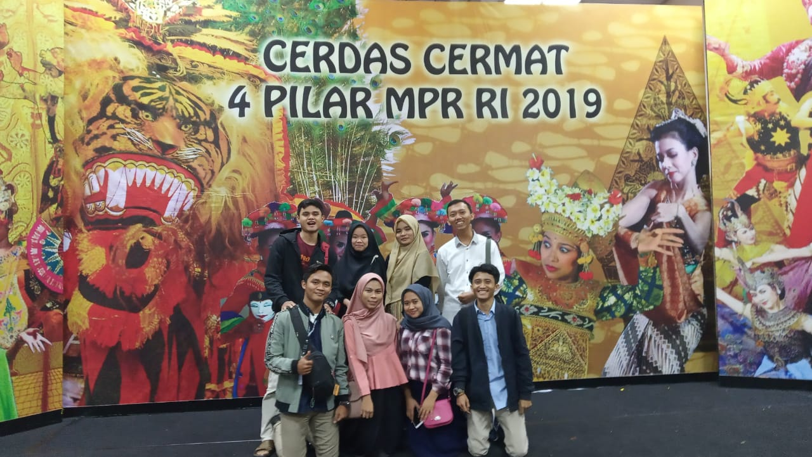

PROFIL
Lomba Cerdas Cermat MPR (LCC MPR) merupakan salah satu ekstrakurikuler di SMAN 1 Ciomas. Ekskul ini merupakan ekskul yang berbasis prestasi, dimana tujuan utamanya yaitu menjadi pemenang di LCC 4 Pilar Tingkat Nasional. Jumlah anggota dalam ekskul ini yaitu 10 orang. Tidak sembarang orang bisa menjadi anggota. Calon anggota harus melewati beberapa tes, diantaranya yaitu tes menghafal, tes tulis, dan tes wawancara. Setiap tahunnya, ekskul ini hanya menerima 5 anggota dari ratusan peserta yang mendaftar. Kegiatan dalam ekskul ini diantaranya yaitu setoran hafalan, simulasi, serta sharing-sharing.
Pengurus 2014
Adapun anggota LCC MPR 2020 yaitu:
- Hilmi Hermawan
- Tb. Royhan Fachira
- Fitratul Hasanah
- Erni Yuniarti
- Riska Sari H.
- Yudi Maulana
- Dwiki Nur
- Siti Hardianti
- Mila Puspitasari
- Uswatun Hasanah
Pengurus 2015
Adapun anggota LCC MPR 2020 yaitu:
- Hilmi Hermawan
- Tb. Royhan Fachira
- Fitratul Hasanah
- Erni Yuniarti
- Riska Sari H.
- Ayu Septia
- Hanafi
- Mutiyaturrohmah
- Farina Meisyarah
- Nia Cusniah